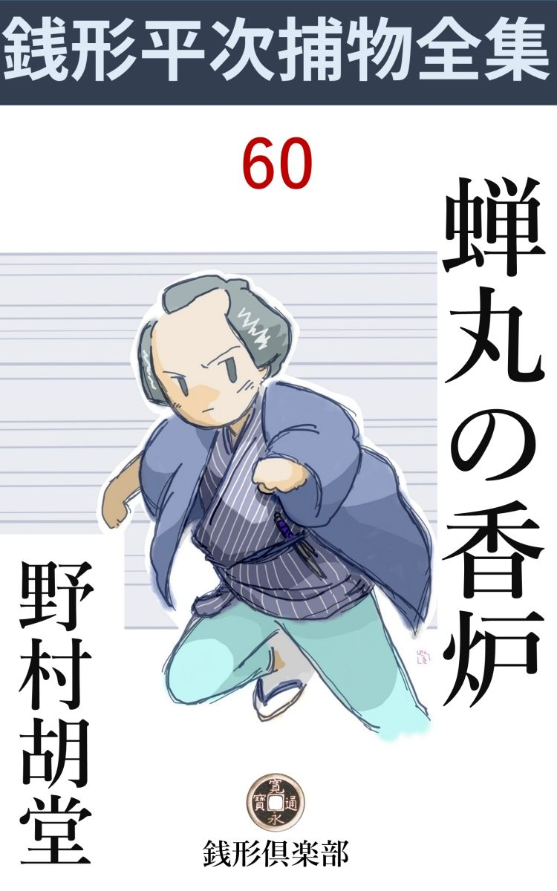
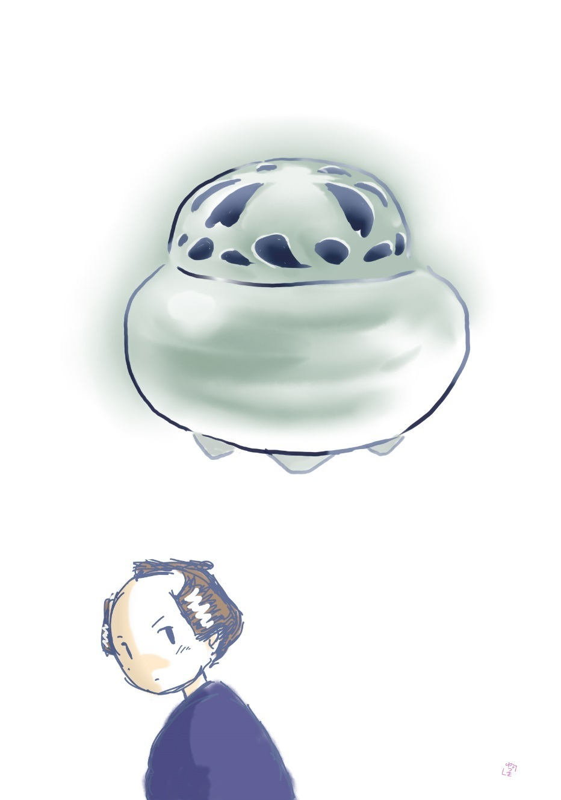

| 蝉丸の香炉: 銭形平次捕物全集第86話 (銭形倶楽部) | |
| 野村胡堂 | |
| ZENIGATA CLUB (2018) | |

一
「親分、松が除 れたばかりのところへ、こんな話を持込んじゃ気の毒だが、玉屋に取っては、この上もない大難、------聴いてやっちゃ下さるまいか」
町人ながら諸大名の御用達を勤め、苗字 帯刀 まで許されている玉屋金兵衛は、五十がらみの分別顔を心持翳 らせてこう切り出しました。
「御用聞には盆も正月もありゃしません。その大難というはいったい何で？」
銭形の平次は膝を進めます。往来にはまだ追羽子 の音も、凧 の唸りも聞える正月十三日、よく晴れた日の朝のうちのことです。
「外じゃない、さる大々名から、新年の大香 合 せに使うために拝借した蝉 丸 の香炉 、至って小さいものだが、これが稀代の名器で、翡 翠 のような美しい青 磁 だ。それが、ゆうべ私の家の奥座敷から紛失した。------たった香炉一つと言ってしまえばそれまでだが、一国一城にも代え難いと言われた天下の名器で、公儀へ御書き上げの品でもあり、紛失とわかれば、内々で御貸下げ下すった、御隠居様の御迷惑は一と通りでない。私はまず腹でも切らなければ済まぬところだ」
「------」
平次は黙って聴いておりますが、玉屋金兵衛の困惑は容易のものでないのはよく解ります。
「親分は、お上の御用を勤める身体だ。香炉の紛失は言わば私事 、こんな事を頼んではすまないが、これは金ずくでも力ずくでも叶わない。いよいよ香炉が出て来ないとすると、私の命一つはともかくとして、さる大々名のお家の瑕 瑾 ともなるかも解らない。折入っての願いだが、何とか一と骨折っては下さるまいか」
玉屋金兵衛は、畳に手を突かぬばかりに頼み入ります。大町人らしい風格のうちに、茶や香道で訓練された、一種の奥床しさがあって、こうまで言われると、平次もむげには断り切れません。
「宜しゅうございます。それほどの品が無くなるのは、容易ならぬわけのあることでしょう。出るか出ないかはともかくとして、一つ当って見るとしましょう」
「有難い、親分」
「ところで、無くなったのは何時のことでございます」
「昨夜の宵のうち、------詳しく言えば、戊刻 頃までは確かにあったが、今朝見ると無くなっている」
「怪しいと思った者はありませんか」
「外 からは容易に入れるはずはないから、家の中の者だろうと思うが、困ったことに、その部屋は一方口で、手前の部屋にいたのは、私の娘お幾 の踊友達、親類のように付き合っている、お糸という十九になったばかりの娘だけなんだが------」
玉屋金兵衛の調子は、その娘に疑 いをかけたくない様子でした。
「とにかく、お店へ行って、みんなに引き合せて貰いましょう。その上間取りの具合でも見たら、また何か気が付くかも知れません」
「それじゃ親分、何分よろしく頼みますよ」
少し言い足らぬ顔ですが、さすがに大店 の主人らしく、言葉少なに引揚げて行きます。
その後ろ姿を見送って、
「親分、大変なことになったネ」
ガラッ八の八五郎は乗出します。
「何が大変なんだ、------大名高家では、青磁 の香炉 一つと、人間の命と釣替に考えているようだが、こちとらの眼から見れば、猫の子のお椀と大した違いがあるものか。そんな事で玉屋の主人が首でも縊 るような事があっちゃ悪いと思うから乗出す気になったのさ。俺は宝物の詮議など、本来なら真っ平だよ」
「そんな話じゃねえ、親分、大変と言ったのは、あの娘ですよ」
「玉屋のか」
「いえ、玉屋の娘のお幾は世間並の雁首 で、なんの変哲もありませんが、その踊友達のお糸というのが大変なんで」
「何が大変なんだ」
「親は本郷一丁目の古道具屋与次郎という、大跛者 の愛嬌者だが、娘は本郷一番のきりょう ですよ。あんなピカピカするのは、江戸一番と言っても文句を言う奴はありゃしません。玉屋の息子の金五郎が、命がけの参りようで、貧乏人の娘を承知の上、貰うとか貰われるとか、町内の若い衆をワクワクさせていますぜ」
「そいつは初耳だ。何か筋が深そうじゃないか、行って見るとしよう」
平次は立ち上がりました。が、煙草入を懐に入れて、お静に羽織を出させていると、
「今日は、------親分さんはいらっしゃいましょうか」
おずおずした声が入口に立っております。
二
「私は本郷一丁目の古道具屋与次郎でございます。お願いでございます、娘をお助け下さい。娘のお糸が盗人 の疑 を受けて、大名屋敷へ引渡されそうになっております。引渡されたが最後、生きて帰りっこはありません」
そう言うのは、五十に近かろうと思われる見る蔭もない男、涙と鼻水と一緒にかなぐり 上げて、一生懸命さが無精 髯 の面に溢れます。
ガラッ八の言った通り、右の脚は大怪我でもしたらしい跛 で、生活に疲れ果てた顔には、いたましいやつれさえ見えます。
「娘がどうしたと言いなさるんだ。それだけじゃ解らない、落着いて話して見るが宜い」
平次はさり気なく宥 めて、ともかくも座を設けてやりました。
「有難うございます、親分さん。私はまア、どうなることかと思いましたが、フト思い付いたのは銭形の親分さんの事で、打明けてお願い申上げたら、ヒョッと助けて下さることもあろうかと------」
話は要点を遙 かに外れて、ともすれば愚痴 になりそうです。
「そんな事はまアどうでも宜いとして、娘がどうしたというんだ。それを聴こうじゃないか」
「へエ------実はこう言うわけでございます」
与次郎はたどたどしい調子で話し始めました。
女房に死に別れたのは十八年前、一人娘のお糸が、竹の中から生れた伝説のお姫様のように、美しく輝かしく育つのを楽しみに、下 手 物 の道具を並べて、細々とやって来た与次郎ですが、三年ほど前から玉屋の養い娘お幾と踊の相弟子で懇意になり、その家へ遊びに行くうち、息子の金五郎と、好い仲になってしまったというのです。
提灯と釣鐘ほどの違いで、纏 りそうもない縁談でしたが、無理に割けば、相対死もやりかねまじき若い者の情熱に引摺られたのと、娘可愛さの与次郎の必死の運動が効を奏して、近頃になって玉屋もようやくその気になり、仮親でも立てて、春になったらお糸を嫁に------という話が進んでいたのでした。
養い娘のお幾は、金五郎と一緒にするはずでしたが、自然暖簾 を分けて、外から養女でも迎えることになるでしょう。
「これで八方円 く納まるだろうと喜んでいると、この騒ぎです。------ちょうど娘が泊りに行った晩、娘が寝 んだ部屋の隣に置いてあった、何とか言う大名道具の香炉が無くなったそうで------娘が帰ってから気が付くと、追手でも掛けたように、番頭の甚助さんが飛んで来て、娘が盗ったと決めたような無理難題でございます」
ともすれば愚痴 になる与次郎の話の中から、平次は辛くも筋を読み取ります。
「証拠でもあったのかい、------娘さんが盗ったと言う------？」
「甚助さんが改めると、娘の稽古本 を包んだ風呂敷には灰がいっぱい付いております。香炉でも隠したんでなければ、風呂敷へ灰なんか付くわけはないと申します。それに、困ったことに親の私は古道具屋で、骨 董 にはいちおう眼が利くだろうし、隠すにも売るにも、何 彼 と都合がよかろうと、こう思っている様子でございます。------でも、親分さん、私などは古道具屋と申しても、店にある品と申しては、鍋や釜や、古いお勝手道具や、せいぜい化けそうな仏様ばかり。大それた品を持込んだら、すぐ知れてしまいます」
「------で、娘さんはどうしたんだ」
際限もない愚痴を封じて、平次は話の要領を辿りました。
「品が出て来るまで、娘は玉屋さんが預ると申して、甚助さんが一緒に伴れて参りました。去年の秋甚助さんが、娘を自分の嫁に欲しいと言った時、私もツイポンポン断りましたが、それを根に持ったにしても、あんまりひどい仕打でございます。お上のお手に掛るのなら、縛られても繋 がれても文句はありませんが、苗字帯刀を許されても、町人はやはり町人同士でございます。まして番頭風情が、人の娘を誘 拐 すように、つれて行って宜いものでしょうか、親分」
与次郎の愚痴は際限もありません。
「よしよし、解ったよ。それじゃ、玉屋へ行って見よう、香炉が出さえすれば文句はあるまいから」
「有難うございます、親分さん」
三
平次とガラッ八は、すぐ本郷一丁目へ飛びました。玉屋金兵衛の大名屋敷ほどの家と、古道具屋与次郎の小さい汚い店は半丁とも離れておりませんが、なるほど提灯と釣鐘以上の距 りです。
最初に行ったのは玉屋、打合せがあったので、待ち構えたように主人が迎えて、さっそく奥へ案内しました。
「香炉の無くなったのはこの部屋だが、雨戸を締めると、どこからも入りようはない------」
「香炉はあの箱に入れてあったのでしょうね」
平次は違い棚に載せてある打紐 の掛った時代付の桐箱を指しました。
「その通りだよ親分、箱から抜かれたのを、翌る日の朝まで気が付かなかったのは迂濶 さ。裸にしておけば、その晩のうちに気が付いたかも知れないのに」
「紐は結んでありましたか」
「確かに結んであったはずだが、今朝見ると解いたのを宜い加減につくねて、正面から見ると結んであるように見せていた」
「余程急いだのですね」
「------」
金兵衛は平次の顔を見ました。紐を結んでなかったということが、何か手掛りの一つのように聞えたのです。
「隣の部屋に一と晩泊った者が盗ったのなら、紐くらい結ぶ隙はあったはずですね」
平次は明かに、お糸の冤 を、たった一本の真田紐 で証明しようとしているのです。
「もっとも、お糸さんが誰かを手引して入れると別ですね、親分さん」
誰やら口を容れた者があります。ふり返ると、平次の後ろに立っているのは三十前後のちょっと好い男、卑屈な薄笑いが薄い唇の上に残っております。
「お前さんは？」
「へエ、番頭の甚助でございます、へエ」
甚助は口の過ぎたのに気が付いたものか、揉手 をしながら尻込みをしております。
「お糸をつれて来たそうだが、お上の御用も勤めるのかい」
平次の舌は辛辣でした。
「と、とんでもない。支配人の申付けで、よんどころなくあんな事を致しました、へエ」
「支配人を呼んで貰おうか」
「へエ------」
甚助はキリキリ舞いをしながら飛んで行きました。
「あれは子飼いですか、旦那」
「いや、三年ほど前、名古屋から添状 を持って来た男だが、よく気の付く働き者で、今では支配人の片腕のようになっていますよ」
そんな話を聞きながら、平次は縁側から、霜解けのひどい庭などを見ております。
「昨夜は暖かでしたね」
「そう、凍 らなかったようだが------」
「人が歩けば、足跡が付くはずですね、庭石の上もあの通り綺麗だし」
平次はここでも、お糸が曲者を手引したという、甚助の疑を粉砕したのです。
そこへ支配人の庄八が飛んで来ました。
「親分さん、御苦労さまで。------私の指 金 で、お糸さんに来てもらいましたが、とんだお叱言を頂戴したそうで、まことに相済みません、へエ------」
六十近い、よく光る頭を撫でて、すっかり恐れ入っております。
「叱言をいうわけじゃ無いが、嫁入前の娘へ、傷を付けちゃ悪いと思って、ツイあんな事を言って見たのさ」
「へエ------」
「そのお糸さんはどこにいるんだ、ちょいと逢って見たいが」
「これへつれて参りましょう」
と庄八。
「いや、此方から行こう」
「へエ、------それじゃこうお出でなさいまし」
平次とガラッ八は、庄八と甚助に案内されて、廊下続きの裏の離屋へ行きました。
が、縁側をグルリと廻ると、多勢の足音に驚いた様子で、障子を中から開けて、パッと飛出した者があります。
「あ、若旦那」
声を掛ける庄八を突き飛ばすように、
「庄八、甚助、お前達は、寄ってたかってお糸を泥棒にする気かい」
屹となったのは、二十一二の、典型的な大店 の若旦那です。言うまでもなく玉屋の一人息子の金五郎、今までお糸を慰めていたのでしょう。
「とんでもない、若旦那」
「宜いよ、解ったよ。お前達が、それほどお糸を目の敵 にするなら、俺がこの家を出て行くか、お前達に身を退いて貰うか、何方かにするから」
「若旦那、そんなわけじゃございません。現に銭形の親分さんも、お糸さんに怪しい事はないと仰しゃったばかりで------」
庄八にそう言われると、金五郎は始めて気のついた様子で、
「あ、銭形の親分、助けて下さい、------こいつ等が企 らんで、お糸を殺してしまいます」
いきなり平次に飛付きました。わがまま息子らしい激情が、一ぺんに爆発したのでしょう。
平次は静かに宥 めながら、金五郎が今出て来た離屋へ入って行きました。そこには十九になるお糸が、木綿の不断着のまま赤い簪 を顫 わせて泣いているのです。
「------」
平次はしばらく黙って見ておりましたが、誇りを傷つけられた処女 に、何を言ってやったところで、無駄だと思ったものか、
「八、お糸さんを家へ送って行くが宜い、後から俺も行くから」
八五郎を顧 みて、率直に言います。
「へエ------」
ガラッ八はほんの少しばかり躊躇しました。泣き濡れてはいるものの、この時不思議そうに顔を挙げたお糸は、全く美し過ぎたのです。
平次はそれから、養い娘のお幾に逢いました。これは世間並の平凡な娘で、踊は天才的だと聴きましたが、きりょう は一向つまりません。
その上、金五郎とは藁 の上からいっしょに育って、兄妹としての愛情しか感じないらしく、お糸との濃 やかな仲を見せられても、一向無関心でいられる様子です。
店の者にも一と通り逢って、
「蝉丸 の香炉 はこの家から出た様子はありません。無くなってまだ半日も経たないんだから」
平次はこう結論するより外にはなかったのでした。
四
間もなく平次は、与次郎の古道具屋に現われました。
「有難うございます。親分さんのお蔭で、娘も無事に戻りました。縁談には面白くないことですが、後のところは若旦那が、何とかして下さることでございましょう」
与次郎は、金五郎の純情に委 ね切って、娘の幸福を疑う様子もありません。
「安心するのは早かろうよ、まだ香炉が出たわけじゃないからな------」
平次は、併し、釈然とした様子もありません。
「へエ------、すると、どんなことになりましょう？ 親分さん」
「香炉が出て来なきゃ、玉屋は申訳が立つまい。大名一軒に瑕 瑾 がつくか付かぬかの騒ぎだ」
「へエ------」
「金にも宝にも代え難い品だというから、玉屋の身上を振っても追っ付くことではない。主人が腹を切るか、曲者を捜し出して成敗するか、------しばらくは祝言どころの沙汰ではあるまいよ」
「へエ------」
与次郎の顔には、ありありと失望の色が読めます。
「ところで、ほんの念のためだ。十手捕縄に物を言わせるわけじゃないが、------家の中を見せて貰いたい」
「へエ------」
不満らしい響きが平次の心を焦立 たせます。
「玉屋も念入りに調べ、奉公人の荷物もみんな見せて貰った」
「香炉はございませんでしたか、矢張り」
「無い」
「それじゃ致し方がございません。存分に御覧下さいまし」
「気の毒だがそうさして貰おう」
平次はガラッ八をさし招くと、二人で狭い家の中を捜し始めました。
ガラクタの山のような店から、たった一と間の居間、お勝手、狭いと言っても、商売柄道具が多いので、相当の手間を取りますが、翡翠 のような美しい青 磁 の香炉というのですから、外のものと紛れるはずもありません。
床下から天井裏から、水瓶 の中までも覗いて、一刻ばかり後には、
「無い」
平次とガラッ八は、元の店に顔を見合せておりました。与次郎はおどおどしながらそれを眺めるばかり、娘のお糸は、見るにたえない様子ながら、逃げも隠れもならず、美しい顔を反 け勝ちに、この傍若無人な家捜しの済むのを待っております。
「親分、香炉は擬 い備前焼 のと、銅 のと、たった二つ切りで青磁なんかありませんぜ」
ガラッ八も少し不平そうです。この気品の高い娘の怒 の前に、いつまで続く家捜しでしょう。
「よし、よし、これも念のためだ。玉屋にもここにも無く、外から盗人 の入った様子もないとすると、消えてなくなったとでも思わなきゃなるまい。こんな事で引あげようか、八」
何と言う器量の悪さ、二人はスゴスゴと神田へ引揚げます。
「親分、今朝玉屋から出た者はありませんか」
「不思議なことに、お糸が出たっ切り、猫の子も外へ出ないとよ」
二人は歩きながらこんな事を言っておりました。
「外 から来た客は？」
「それも無い」
「じゃ、香炉は玉屋にあるわけですね」
「お糸が持出さなきゃ、そう言うわけだ」
「御用聞に持出させる術 はありませんか」
「それも考えたが、酒屋米屋の御用聞は、お勝手口で下女に逢った切りだ。香炉を受取る隙などはない、あの通り人目が多いから」
二人はしばらく黙って歩きつづけました。
「親分、番頭の甚助は朝のうちに出ているでしょう」
ガラッ八は顔を挙げます。
「それを忘れていたのさ。甚助はお糸の迎いに出た、------こいつは筋が立ち過ぎているから、朝のうちに出た人間に勘定するのを忘れたのさ」
「その途中で香炉は隠せないでしょうか、親分」
「玉屋から与次郎の古道具屋まで、たった半町そこそこ、その間にほんの五六軒しか家がない。物を隠す場所はないように思うが、------待ってくれ八、ともかく引っ返して見よう」
平次は踵 を返すと、元の本郷一丁目へサッと引返しましたが、その辺は軒を並べた明るい店造りで、物が隠せる場所などがあるはずもありません。
「無いな、八」
「誰かに渡したんじゃありませんか、時刻 を打合せて」
「そんな暇はなかったはずだ」
「------」
二人は黙ってまた神田へ取って返しました。万策尽きた姿です。
五
その晩は事なく過ぎましたが、翌る日の朝、玉屋から急の使で、平次は飯も食わずに飛んで行きました。
「親分、香炉は出て来ましたよ」
番頭の甚助の顔は店口に輝きます。
奥へ入って行くと、主人の金兵衛も支配人の庄八も、全く蘇 ったようでした。こんどは羽が生えて飛び出すとでも思ったのか、翡翠色の美しい香炉を奥座敷のまん中に据え、二三人の者がそれを繞 って、大名屋敷へ持って行く支度の出来るのを待っております。
「親分、とんだ騒ぎをさせて済まなかったが、この通り蝉丸 の香炉は返って来ましたよ」
主人の金兵衛は笑み崩れそうです。

「どんな具合に返りました、旦那」
と平次。
「今朝起きて見ると、この部屋の床の間に、チョコンと据えてあるじゃないか、いや驚いたの驚かないの」
「誰が見つけました」
「娘だよ」
お幾 の無表情な顔を、平次は部屋の隅っこに見出しました。
「戸締りはどこか変っていなかったろうか」
平次は誰へ言うともなく後 へ振り向きます。
「気がつきませんでしたが------」
庄八甚助も、何の心当りもない様子です。
平次は奉公人達を案内させて、念入りに家の内外を見廻りましたが、戸締りにも、庭の霜柱にも何の変りもありません。
「これほどの品を、家の中に隠してあったとは思われない。八、もう少し念入りに見てくれ」
鼻の良いガラッ八を先に立てて、庭から塀 の外を捜し廻りました。
「変なところに棒があるが、誰がこんなところへ持出したんだ」
支配人の庄八は、裏口から出ると、路地の出口に立てかけた棒を指さしました。長さは二間位、かなり逞 ましいもので元の方には、したたかに泥が着いております。
「植木の突っかい棒ですよ、誰が持出したんだろう？」
甚助も心当りがない様子です。
「外へ出る物じゃないが、------どれどれ」
平次はいきなりその棒を取上げると、塀へ立てかけて見たり、庭へ持込んで、屋根へ掛けて見たりしましたが、離屋の軒の下に、一箇所霜柱 の砕けたところを見ると、そこへ捧を立てかけて、左右前後から見廻しておりましたが、やがて木戸を押しあけて庭へ入ると、ちょうど奥の部屋の前あたりにピタリと立ち止りました。
「梯子 を貸して貰いたいが------」
裏の物置から持って来た九つ梯子を雨落ちに据えると、一番上はちょうど雨戸の欄間 に届きます。
それを登った平次は、黙って調べておりましたが、しばらくすると、一人で呑込んだまま降りて来ました。
「何か変ったことがありましたか、親分さん」
支配人の庄八の心許ない顔を見ながら、平次は静かに言い切ります。
「大変な奴だ、------棒一本で塀を越した上、離屋 の庇 に登って、忍返 しを除 け除けここまで来ると、欄間をコジ開けて音も立てずに入るとは------」
「泥棒が外から入って、香炉を置いて行ったのだろうか、親分」
主人の金兵衛もさすがに仰天 した様子です。
「こんな芸当の出来るのは誰だろう、------棒一本で、どんなところへも忍び込むのは？」
平次は委細構わず首を捻っております。多勢の悪者を手掛けて、捕物の名人と言われた平次ですが、こんな恐ろしい人間のあることをまだ聴いたこともありません。
平次の首がどう捻ろうと、香炉が出て来た上は、もう問題も何にもありません。支度の出来たのをきっかけに、主人の金兵衛は庄八を伴につれて、香炉を大名へ返しに出かけ、早春の庭先には、平次とガラッ八と、甚助とだけが取残されました。
「番頭さん、こんなことの出来るのは誰だろう、見当は付かないかね」
「解りませんよ、親分さん」
甚助は少し不機嫌でした。
「実はね、番頭さん、こんな細工を見る前までは、曲者は外にいるに相違ないと思ったが、これを見て少しばかり考えが変ったよ」
「へェ------それはどう言うわけで？ 親分」
「外から香炉を戻しに入った曲者 なら、最初塀を乗越して入る時から、棒が入用だったはずだ。こんな締りの厳重な家へ、音も立てず道具もなしに入ったほどの曲者なら、帰る時だって棒なんか要らないはずじゃないか。わざわざ裏庭にあった植木の突っかい棒で塀を乗り越して、その棒を外へ------これで出ました------と言わぬばかりに置いて行くのはおかしいじゃないか」
「------」
平次の慧眼 は、妙なところまで見透します。
「これは内にいる者が、外から曲者が入ったように見せかけるために、棒を使って、つまらない細工をしたのさ。棒を外へ放 り出して、開けておいた木戸から入って、後を締めておきさえすれば宜いわけだから」
「なアるほどね」
ガラッ八は長い顎を撫でております。
「この家の中に、棒一本で庇へ登って、欄間を鼠のように渡れる、恐ろしい人間がいるに相違ない、------江戸ではそんな悪者の話は聴いた事がないから、多分他国から流れ込んだ、兇状持 の仕業だろう」
「------」
「奉公人も十二三人いるようだが、他国、遠国の者は誰々だろう」
平次はここまで追い詰めて行ったのです。名古屋から添状を持って、三年前に来た甚助の、苦い顔というものはありません。
六
それから四五日、無事に日が流れました。やがて二十日正月という時、また一つの大きい事件が起ったのです。
「親分、大変だぜ」
「なんだ八」
いきなり飛込んで来た八五郎はしばらく口も利けません。
「番頭が殺されましたよ」
「え？」
「玉屋の番頭の甚助が、湯島の聖堂 裏 で絞め殺されているのを、往来の人が見付けて大騒ぎしていますよ」
八五郎の報告は全く大変でした。
「それ、行って見ろ」
駈け付けたのは、まだ卯 刻 半 そこそこ、往来の人は、聖堂裏の淋しい木立の下に立って、物をも言わずに、緊張した動揺をつづけております。
「退いた退いた」
八五郎に導 かれて行って見ると、大溝の中に落込んで、襤 褸 切 のようになっているのは、玉屋の番頭甚助の死骸。まだ検死が済まないので、手を付ける者もありません。
平次はいきなり水のない大溝に飛降りて、近々と死骸を見ました。恐ろしい強力に締められたものと見えて、喉仏は砕け、顔色は紫色に腫れ上がって、二た眼と見られない悪相ですが、
「おや？」
驚いたことに、死骸の下には、山吹色の小判が一枚、キラキラと氷の中にめり込んで光っているのです。
拾い上げて見ると、
「あッ」
平次が二度びっくりしたのも無理はありません。小判は吹き立てと言っても宜いほど真新しい真物ですが、その表には、あるべきはずの検 印 が捺してなかったのです。
「親分」
「八、大急ぎで奉行所へ飛んで行って、書き役から、近頃検印のない御用金か何か盗まれた事がなかったか、訊いて来てくれ」
「へエ」
八五郎は、そう囁かれると猟犬のように飛んで行きました。
平次はその上に調べることがないと思ったか、溝から飛出すと、一丁目の玉屋へやって来ました。
「銭形の親分さん、------今お迎いに行ったところでした」
すっかり顚倒した庄八は、平次の顔を見るとヘタヘタと坐ってしまいました。
「ゆうべ番頭さんが家を出たのは、何刻 時分だろう」
平次は手っ取早く調べにかかります。
「私は存じませんでしたが、店にいた小僧に聴くと、亥 刻 少し過ぎだったそうでございます」
「もう一人出たはずだが」
平次の問 のさり気なさ。
「でも、若旦那はすぐお帰りになりましたよ」
庄八はツイこんな事まで釣られてしまったのです。
「その若旦那に逢いたいが------」
平次は有無を言わせませんでした。すぐ奥へ通って、若旦那の金五郎に逢うと、興奮し切っているのも構わず、グングン問を進めます。
「ゆうべ、甚助の後を追って出たそうだが、どこへ行きなすった？」
「どこへ行ったって構わないじゃありませんか」
金五郎は突っ張りました。
「構わないようなものだが、------甚助は殺されていますぜ」
「自業自得さ。あんな悪い野郎はない。------誰も殺してくれなきゃ、この私が殺すはずだった」
金五郎の怒は容易に納まりません。
「それはどう言うわけで？」
「お糸をつけ廻して、ここへ寄り付かれないようにしたのは彼の野郎ですよ」
「だが、その甚助が殺されているんだ」
「宜い気味だ」
「その殺された甚助の後を追って、出て行ったお前さんにも疑 が掛からずには済むまい。もう少し前後の様子を話して貰えまいか」
平次は穏やかに話を進めます。
「金五郎、親分へみんな打開けるがよい。つまらない事を言うと取返しが付かないよ」
奥から、騒ぎを聴いて出て来た、主人の金兵衛も言葉を添えます。
「お糸をみんなで邪魔にするから、こんな事になるのですよ。------お幾なんか、あんな済した顔をしているけれど、甚助をけしかけてどんなにお糸を苛 めたかわからない」
金五郎の怒は、憤々として、どこへでも焔を挙げます。
「つまらない事を言うな、------それより昨夜お前はどうしたんだ」
金兵衛は聴きかねた様子で、金五郎の肩を掴みました。
「どうもしやしません。甚助がコソコソ外へ出て行くから、またいずれ悪い事の支度だろうと、後を跟けて行ったまでの事です。もっとも出る時手間取ったのでどこへ行ったか、すぐ見失ってしまいましたよ。しばらくお糸の家の前に立っていたけれど、親父の与次郎は留守のようだし、留守番に頼んだ近所の婆さんと顔を合せるのもイヤだから、すぐ戻って来て寝てしまいましたよ」
金五郎もいくらか穏やかになって、これだけの事を説明してくれました。時間から言えば、間違いもなく甚助の殺された時誰も見ていない外にいたはずの金五郎ですが、若旦那育ちの細腕で、相当したたかな甚助を、締め殺せるとは、どうも受取れません。
平次は、疑 を残して今度はお幾に逢いました。が、これは泣くばかりで、何を訊いても解りません。多分、お糸が出現してから、金五郎の心が急速にそっちへ傾いて行くのを見て、一時は踊に没頭して、何も彼も忘れようと骨を折ったのでしょう。が、端なくもこんな事件が起って、いろいろの激情的な場面を見せつけられ、ツイ胸の奥に秘 んでいた、金五郎とお糸に対する深い深い怨心 が燃え立ったと見るべきでしょう。
「------」
平次は黙って引揚げました。この上、お幾をさいなむ残酷さをつくづく考えたのです。
七
その足ですぐ与次郎の古道具屋を訪ねると、与次郎は眠そうな顔をして、店に坐っておりました。
「眠そうだね」
ヌッと入った平次。
「親分さん。イヤな事ですね、私は根岸の友達が死んで、お通夜に行って何にも知らずに今帰ったばかりですが------」
与次郎はゴクリと臆病らしく固唾 を呑みます。
「根岸の友達？」
「へエ------、友達といっても、商売仲間で、十年も前から懇意 にしていますが、上根岸の源三郎店 にいる、喜六という男で、------まだ四十七になったばかりですが、昨日の朝卒中 にやられて、後が女房に子達が六人、可哀想で見ちゃいられませんでしたよ」
こう聞くと、平次はもう押して訊ねることもありません。
平次はそれでも念のために上根岸まで伸 して見ました。源三郎店の喜六と言う小道具屋は間違いもなく昨日の朝急死して、昨夜は仲間でもあり、格別の間柄でもあった与次郎が、明るい内から来て世話をして一と晩みんなと一緒に仏の伽 をしたことは、多勢の人が口を揃えて証明しております。
「与次郎は一刻 （二時間）くらい抜け出したと思うが------誰も気が付かなかったろうか」
平次は念のために訊ねて見ました。
「引っ切りなしに飲んで食って、百万遍も称えていたんですもの、抜け出す暇なんかありゃしません。もっとも、手水 くらいには立ったでしょうが、どんな長 雪 隠 でも四半刻（三十分）と姿を見せなきゃ、みんな気が付きますよ」
「なるほどね」
そう言われると一言もありません。昨夜のお通夜は、家族の者を別にして、外から来たのは精々十二三人、狭い家の中は、相当ゴタゴタしたにしても、与次郎のような中心人物は四半刻と人に気がつかずに、抜け出せる道理はありません。
「与次郎は何をしていたろう、亥刻 から子刻 の間の事を聴きたいが------」
幸い聖堂裏の甚助殺しもここまでは知られず、平次は思いの儘こんな事が訊けたのです。
「あの男は不思議に念仏嫌いでね、------百万遍が始まると、お勝手へ行ってお燗 番 をしたり、料理の手伝いをしたりしていましたよ」
「有難う、とんだ邪魔をして済まなかった」
平次は何んの得るところもなく、本郷へ帰って来ました。
ちょうど玉屋へ入ろうとすると、
「親分」
店の中から飛んで出たのは八五郎です。
「解ったか、八」
「それが解らねえから不思議で」
二人は物蔭へ歩み寄っておりました。
「検印のない小判を奪られた事が、奉行所の記録にも無いと言うのかい」
「十年この方ありませんよ」
「はてね？」
「二十年前の帳面まで調べたが、矢張りありません」
「フーム」
「二十三年前、金座の後藤へ忍込んで、小判で三千両盗んだ大泥棒があったそうで------」
「少し古いな」
「外には心当りが無いそうですよ」
「玉屋の主人は幾つだろう」
「五十幾つでしょう」
「支配人の庄八は六十近いな」
「------」
「死んだ甚助はまだ赤ん坊だったはずだし、古道具屋の与次郎もほんの子供だった------」
「親分、二十三年前の泥棒なんか詮索 しても、何にもなりませんぜ」
「そうかも知れないな」
二人は玉屋から遠く、裏通りを選って、聖堂裏の方へ歩いておりました。
「待て待て、俺は大変な間違いをしていたらしいぞ。------殺された番頭の甚助は、あの朝香炉 を持出して、古道具屋へ行く前に何処かへ隠した------とまでは考えたが、表通りばかり捜したのは大手ぬかりだ。一寸裏通りへ廻って、隠し場所を捜せないはずはないわけだ」
「どこへ行きなさるんで、親分」
「黙って跟いて来るが宜い、そんなに遠いはずはない」
平次はいきなり、あさり店 の裏から、御 小 人 屋敷、定火消御役屋敷（今の元町）の方へ行きました。
塀の下、石垣の崩れ、積んだ材木の隙間を見て行くうちに、
「この辺だ、甚助は家から持出した香炉をこの辺に隠して空 手 で古道具屋へ行ったに違いない」
平次は独り言を言いながら、狭い路地の中の、とある石垣の崩れへ手を差し込みました。人目に付かないところ、子供の手の届かないところ、泥や下水に汚されないところと言うとなるほど、大人の背の高さほどの、石垣の崩れた穴が一番恰好な隠し場所です。
「あッ」
平次は思わず声を立てました。引出した手には、山吹色の小判が二三十枚、そのいずれも、検印のない品ばかりではありませんか。
八
上根岸の喜六の葬式へ行っていた古道具屋の与次郎は、その日の夕刻、上野の鐘が六つを打つといっしょに、大変な使を受取りました。
「本郷の与次郎さんはいますか、------大、大変な事が------」
息を切って飛込んだのは、顔見知りの町内の若い者です。
「お、町内の方、何が起ったんで！」
葬 いの跡形付を手伝っていた与次郎が顔を出すと、
「お糸さんが、若旦那と逃げ出したよ、書置きをして」
「えッ」
「行先は東海道だ、------江の島で心中をするんだって」
「しまったッ」
与次郎は飛出すと、袷 の尻を端折って駈け出しました。上根岸から御徒士町へ、筋違いから、日本橋へ------。
大跛足 で、家の中を歩くのさえ不自由そうにしていた与次郎の足の早いこと。
その頃の江戸の町人は、滅多に駕籠に乗れなかったもの、急ぐ用事は、二本の足で駈けるより外に方法はありません。
娘お糸、------十九年間手塩にかけて輝くばかりに美しく育てた一人娘お糸の命を救うためには、与次郎はもう跛者 なんかの真似をしていられなかったのです。事実、右の高 股 を切られて、跛足だったには相違ありませんが、異常な体力の持主で、そんな事は見事に征服するだけの自信があったのです。
上根岸から日本橋まで、ほんの四半刻ともかかりません。この勢いで駈けて行ったら、品川手前でお糸に追い付き、その無法な道行から引戻すことも出来たでしょう。が、日本橋へ差しかかった時、与次郎は思わぬ障害に出っ逢 しました。
「待て待て与次郎」
「え？」
「天狗 小僧の与吉、------三千両の御用金泥捧、------玉屋の番頭甚助殺しの下手人、神妙にお縄を頂戴せい」
橋の真ん中に通せん坊をしていたのは、夕闇の中にもはっきり、銭形平次の勝ち誇った姿と判ったのです。
「あ、己 れは平次」
「上根岸からここまで四半刻で駈けつける位なら、百万遍を称えているうちに、聖堂裏まで行って人を殺せるはずだ」
平次は、ツと一歩進みました。
「------」
後をふり向くと、大手を拡げて突っ立ったのは、ガラッ八の八五郎。
「銭形の親分、------いかにも俺は天狗小僧、二十年堅気で暮したのは、一人娘のお糸が可愛いいばかりだ、------その娘の出世を妨 げる甚助、殺したのが悪いか」
与次郎の声は凄惨でした。
「人を殺して悪くないはずはない」
と平次の声は冷たく響きます。
「あの野郎は、無体の横恋慕をして、香炉を盗んだ罪を娘に着せ、玉屋との縁談をこわしにかかった、------俺は昔取った杵 柄 で、感を働かせて石垣の間から香炉を見付け、その翌る晩玉屋へ返したが、------」
「棒をなぜ外へ捨てた」
「あんまり癪 にさわるから、甚助へ少しばかり疑 がかかるようにしたのさ」
平次の明察を、与次郎は裏書きします。
「その甚助を何で殺した」
「あの野郎の親は、俺の昔の相棒だ。それを知っていて、二十何年前に書いた、連判帳を種に脅 かし、お糸を嫁にくれと言うから、その代り五十両で連判帳を買い取ると約束し、聖堂までおびき出して殺したのさ」
「その時、検印のない小判を一両落したのを気がつかなかったろう、天命だ、お縄を頂戴せい」
人立ちの次第に多くなるのを恐れて、平次はツト進みました。
「待った、銭形の親分。娘には何の罪もない。後を頼まれては下さらぬか、------天狗小僧一生のお願いだ」
与次郎の声は悲愴でした。
「よし、引受けよう。必ず金五郎と添わせてやる」
「有難てえ、銭形の親分が引受けて下されば思いおく事はない。お礼心に、三千両の隠し場所を申上げる」
「何？」
「二十三年前に盗んだ御用金三千両は、浜町河岸の石置場、百貫あまりの御 影 石 の下だ------左の小さい楔 を取ると、子供にも取出せる」
「よし、解った。お上へ申上げてお慈悲を願ってやる。お縄を頂戴せい」
平次とガラッ八の挟撃は次第に近くなって来ました。橋の両袂に群がる人数は、思わずワッと喊 声 をあげます。
「親分、天狗小僧も五十だ。今からお処刑 でもあるめえ、それだけは勘弁しておくんなせえ」
「あ、待て待て」
と言う間もありません。与次郎は懐から取出した匕 首 、自分の喉に突ったてると、そのまま、欄 干 越しに、闇の水に落ち込んでしまいました。
× ×
「親分、変な捕物だね」
その帰り途、ガラッ八は寒々と愚痴をこぼします。
「これをお糸へ言うのが一と仕事だ。何か親の罪だけでも胡 麻 化 しようはないかね」
「死骸は揚ったし、三千両の小判は出たし、隠しようはありませんよ」
「困ったな八」
平次はお糸の歎きを見るのが何より嫌だったのです。
「親分、あの石垣の穴に小判があったのは、どういうわけです」
ガラッ八はまた絵解きをせがみました。
「浜町の石置場から見せ金の積りで五十両持って来たが、死骸といっしょに置くわけには行かないし、検印がないから急には捨てる場所も思いつかない。フト殺された甚助が香炉を隠して置いた穴を思い出して、そこへ投り込んで上根岸へ飛んで帰り、二十年前の連判帳は竈 の下か何かで焼いたのさ」
「なるほどね」
「二十年前に足を洗った天狗小僧が、無事に天命を全 うする積りで、娘の育つのを眺めていたのは殊勝じゃないか、------その娘のために、こんな事になったのは考えて見ると可哀想でもあるよ」
「------」
「これから、お糸と金五郎を添わせるのが一と仕事だ、が、お互同士の気さえ確りしておれば、何とかならない事はあるまい」
平次はしんみり言って、遅い月を仰ぎました。寒い晩でした。
（編注）
作品中には、身体の障害や人権にかかわる、差別的な語句や表現が見られますが、本書が成立した当時の時代背景等が現代とは異なる古典的な文学作品でもあり、著者が故人でもありますので、底本のままとしました。ご理解、ご諒承のほどをお願い申し上げます。
著者---野村胡堂
挿絵---萩 柚月 © 2017
初出---「オール讀物」昭和十二年二月号 文藝春秋社
底本---「錢形平次捕物全集」第三巻 河出書房 昭和三十一年六月十五日初版
編集・発行 銭形倶楽部